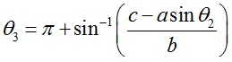
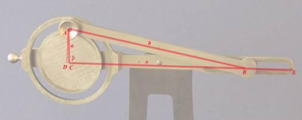
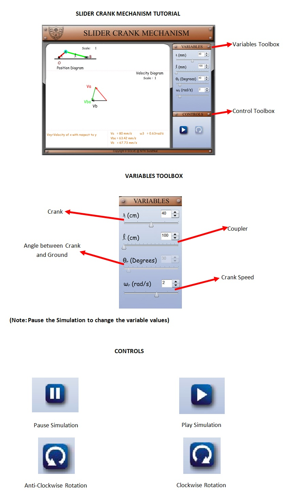

Velocity analysis of slider crank mechanism Theory
 Learning objectives
Learning objectivesAfter completing this simulation experiment one should be able to
- Determine the location of the piston and its linear velocity in a reciprocating engine or compressor at any given crank angle, for a given crank and connecting rod length
- Determine the angular velocity of connecting rod
- Determine the linear velocity of cg of connecting rod
- Calculate the kinetic energy of any link at any given instance
- Explain the effect of
 ratio on different link velocity
ratio on different link velocity
| Slider crank mechanism | Position analysis | Velocity analysis | Acceleration |
| analysis Inversions | First inversion | Second inversion | Third inversion |
| Fourth inversion |
The slider-crank mechanism is one of the most useful mechanisms in modern technology since it appears in most of the internal combustion engines including automobiles, trucks and small engines. The slider-crank kinematic chain consists of four bodies linked with three cylindrical joints and one sliding or prismatic joint. It is used to change circular into reciprocating motion, or reciprocating into circular motion.

The arm may be a bent portion of the shaft, or a separate arm attached to it. Attached to the end of
Velocity analysis of slider crank mechanism
the crank by a pivot is a rod, usually called a connecting rod. The end of the rod attached to the
crank moves in a circular motion, while the other end is usually constrained to move in a linear
sliding motion, in and out.
Position Analysis

Figure 1 shows a slider-crank mechanism in which the stroke-line of the slider doesn,t pass
through the axis of rotation of the crank.  in clockwise direction from x-axis is taken as
negative.
Then,
in clockwise direction from x-axis is taken as
negative.
Then,

and

Where ,


Velocity Analysis

Let  be the velocity of the slider, and
be the velocity of the slider, and  be the angular velocity of the coupler link. Then,
from the data gleaned from the position analysis and the crank velocity, , we have
be the angular velocity of the coupler link. Then,
from the data gleaned from the position analysis and the crank velocity, , we have


Acceleration Analysis

Differentiating the earlier equations from velocity analysis, we end up with the acceleration data of the slider crank. With the prior knowledge of the angular acceleration of the crank,
 ,
the parameters such as the linear acceleration of the slider,, and the angular acceleration of
the coupler,
,
the parameters such as the linear acceleration of the slider,, and the angular acceleration of
the coupler,  .
.


Inversions

Different mechanisms obtained by fixing different links of a kinematics chain are known as its inversions. A slider-crank chain has the following inversions: - 1. First inversion (i.e., Reciprocating engine and compressor) 2. Second inversion (i.e., Whitworth quick return mechanism and Rotary engine) 3. Third inversion (i.e., Oscillating cylinder engine and crank & slotted - lever mechanism) 4. Fourth inversion (Hand pump) First Inversion
In this type of inversion CE is held fixed and A rotates around C along a circle and B slides back and forth along CE.


This is the most common type of inversion. It is used in reciprocating engine and compressor.
Second Inversion
In this type of inversion C and A are both held fixed and the link CE rotates in a circle around C. The slider B slides back and forth along the rotating CE.

Whitworth Quick-Return Mechanism In this inversion of the slider-crank the slider guide link is made to rotate. This is called a quick-return mechanism. This linkage also converts rotary motion of the crank into oscillatory angular motion of the slider guide link. This mechanism is used in shaper machine tools for cutting metals. Joseph Whitworth was a 19th century British engineer and inventor.

Third Inversion
In this type of inversion A and B are both held fixed but the slider is allowed to swivel.


The oscillating cylinder engine is a form of a slider-crank mechanism. This mechanism is used often in door damper mechanisms. In the 19th century the oscillating cylinder was used on steam locomotives.
Fourth Inversion
In this type of inversion the slider B is held fixed and CE slides back and forth through the slider.


< 